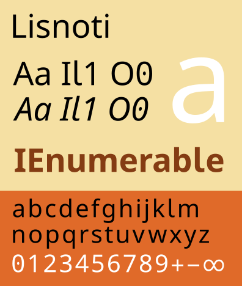

Lisnoti (/lɪzˈnəʊtiː/) is a proportional sans serif font designed for general use but with particular consideration given to making it work
Lisnoti is available in regular, italic, bold and bold-italic variants in
OpenType (.ttf) and web (.woff2) formats under the
SIL Open Font Licence (OFL).
The current release is version 2.003 (25 September 2026).
If you’re interested in why Lisnoti exists, please see this article.
There are three ways to use Lisnoti.
To get Lisnoti to work on your computer, download
Lisnoti-ttf.zip,
unzip it and install the four .ttf files in the usual way for your operating system:
Download Lisnoti-woff2.zip, copy the folder into your site, link its stylesheet, and name the font in your CSS:
<link rel="stylesheet" href="/Lisnoti-woff2/lisnoti.css">
body { font-family: Lisnoti, sans-serif; }
If you would rather not have a <link> in your pages, put this line at the
top of your own stylesheet instead and drop the
<link>.1
@import url("/Lisnoti-woff2/lisnoti.css");
Either way, leave lisnoti.css in the folder with its font
files.3
lisnoti.css serves the font by subset: Latin letters plus common characters,
Greek, Cyrillic, maths symbols and so on are separate files, and a page fetches only the
subsets for the characters it uses. A page of English text fetches about 27 KB for
each font weight, and the maths and symbol subsets only as and when needed.
Note
If you would rather have one file per style (about 425 KB each), or your page sets
decomposed phonetic text (a base letter followed by a combining mark, which needs both
to come from one file), use
Lisnoti-woff2-monolithic.zip
instead and link its lisnoti-full.css.
You don’t need to host anything if you don’t want to. Simply point at the stylesheet on
lisnoti.com instead, either from your web pages (which means they all require this link in
their <head> section)
<link rel="stylesheet" href="https://lisnoti.com/lisnoti.css">
or from the top of your own stylesheet (which is what lisnoti.com itself does)
@import url("https://lisnoti.com/lisnoti.css");
The above links deliver the font by subset (which is usually the optimal approach for web
pages). If instead you want the monolithic version use
https://lisnoti.com/lisnoti-full.css.
If you have comments on Lisnoti, please use the GitHub repo discussions page.
Please bear in mind that I am not a typography expert, just a frustrated user.
Lisnoti is derived from Noto's sans serif fonts, but with the following adaptions:
Reliable distinction of upper case I, lower case l and one
1, and of upper case O and zero 0, in every style:
Il1 O0 Il1 O0 Il1 O0 Il1 O0
Consistent arithmetic, comparison, logic, set, n-ary and other maths operators, all sitting on one maths axis, e.g.
An OpenType MATH table, so Lisnoti can be chosen as the equation font in
Word and loaded by unicode-math in LuaLaTeX: fractions, radicals, big
operators with limits, stretchy brackets and accents are all set from the font's own data.
Greek and Cyrillic letters – maths and logic make frequent use of Greek letters and occasionally Cyrillic ones too.
Consistently formatted digit and – if available – Roman letter sub and superscripts:
A reasonable selection of symbols, including
All the operators parsed by Julia (which is itself a good test of a technical font).
Unicode mathematical alphanumeric symbols:
𝐀𝐴𝑨 𝒜𝒲𝓐 𝔄 𝔸 𝕬 𝖠𝗔𝘈𝘼 𝙰
The script capitals come in both roundhand (the default, \mathscr) and
chancery (\mathcal) styles:
𝒜ℬ𝒞𝒟ℰℱ𝒢ℋℐ𝒥𝒦ℒℳ𝒩𝒪𝒫𝒬ℛ𝒮𝒯𝒰𝒱𝒲𝒳𝒴𝒵
𝒜︀ℬ︀𝒞︀𝒟︀ℰ︀ℱ︀𝒢︀ℋ︀ℐ︀𝒥︀𝒦︀ℒ︀ℳ︀𝒩︀𝒪︀𝒫︀𝒬︀ℛ︀𝒮︀𝒯︀𝒰︀𝒱︀𝒲︀𝒳︀𝒴︀𝒵︀
The chancery forms are reached by Unicode's variation sequence (the capital followed
by U+FE00) or by the ss01 feature, which is what unicode-math
uses: \setmathfont{Lisnoti}[range=\mathcal, StylisticSet=1].
Other standardised variation sequences of maths blocks, each shown here after its base: cups and caps with serifs, circled operators with a white rim, subsets with the stroke through both lower members, relations with a slanted equals, empty set and zero with a slash: ∩∩︀ ∪∪︀ ⊓⊓︀ ⊔⊔︀ ⊕⊕︀ ⊗⊗︀ ⊜⊜︀ ⊊⊊︀ ⊋⊋︀ ≨≨︀ ⪬⪬︀ ∅∅︀ 00︀
Tip
If you want the above but with a monospaced font, then take a look at Julia Mono.
Lisnoti can now be used for equations in Word, but there are two potential gotchas that it's worth being aware of:
Always select 'Lisnoti', not '@Lisnoti'. Windows provides the '@Lisnoti' option because of how it handles fonts that include East Asian characters, but this is not what you want.
If Lisnoti is not shown as a font option for equations and you have previously installed Lisnoti v1 then try closing all Office programs, and then the following in a command prompt:
reg delete "HKCU\Software\Microsoft\Office\16.0\Common\MathFonts" /v Lisnoti /f
@import has to be the first rule in the stylesheet, before anything
else, or browsers ignore it. It also costs a little speed: the browser has to fetch
your stylesheet and read its first line before it discovers lisnoti.css,
where a <link> in the head is found and fetched straight
away.2
↩
A <link> is usually one edit, not one per page: most sites put it in
a template, a layout or a shared header. Where that is so, the <link>
is both the tidier and the faster of the two.
↩
The font file names inside lisnoti.css are relative to that file, so the
fonts are found wherever your own CSS lives. Pasting the @font-face rules
into your own stylesheet also works, and saves a request, but then the names are
relative to your file and have to be repointed at the folder.
↩